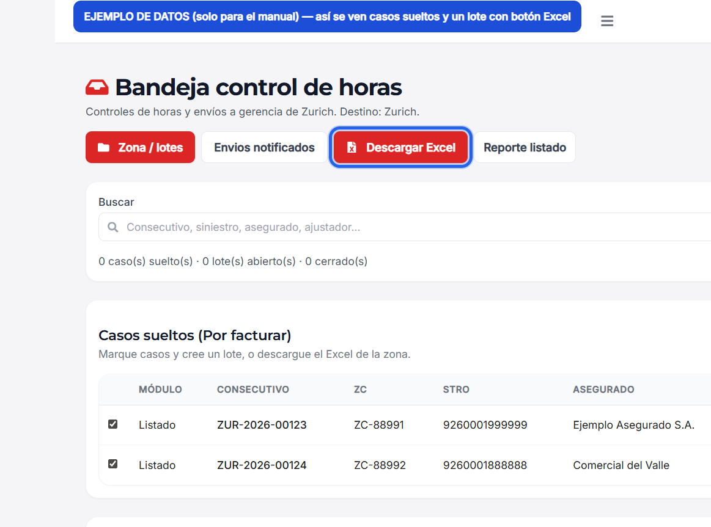
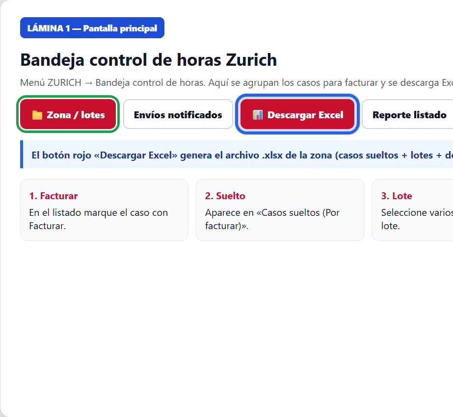
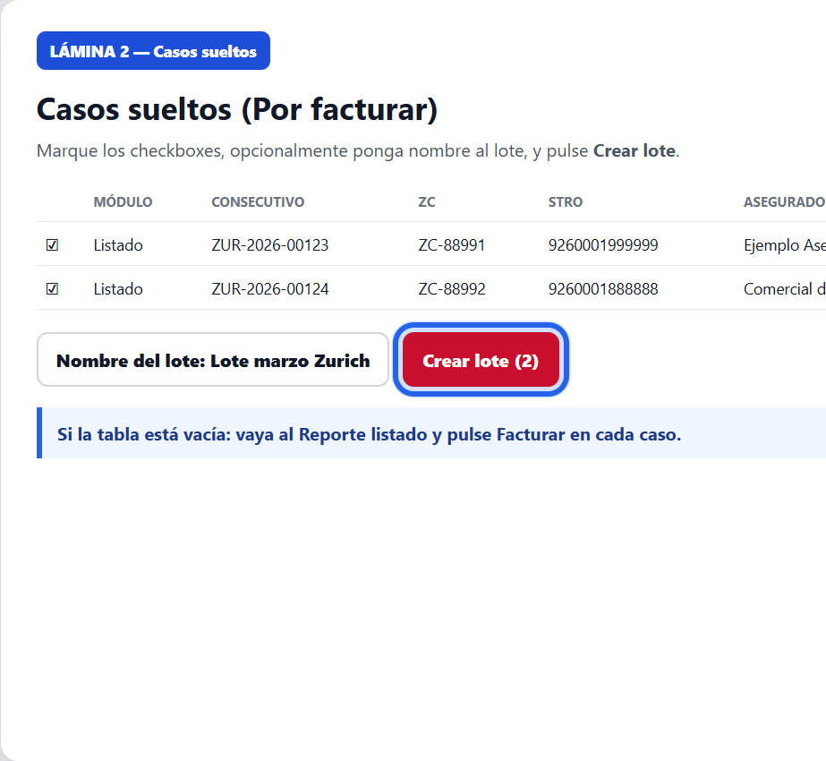
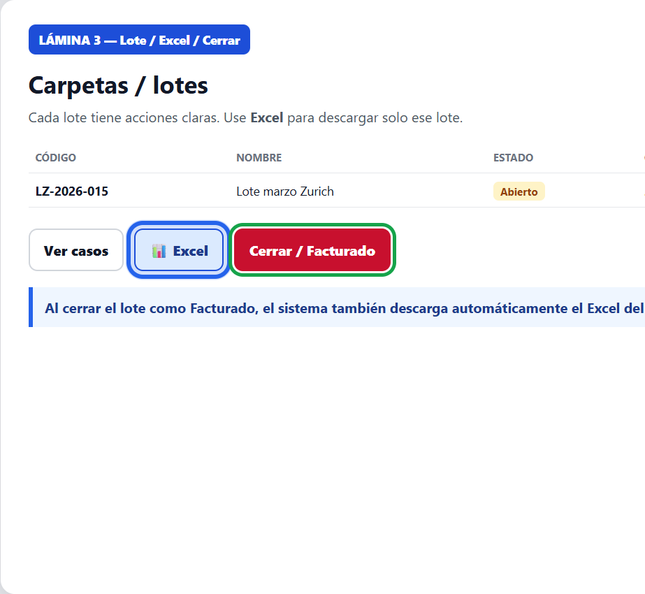
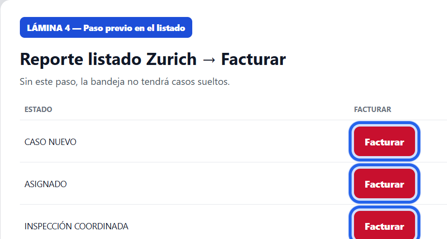
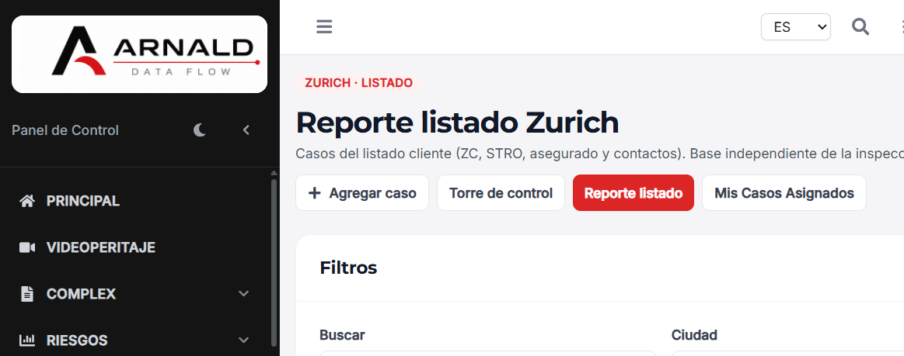

1. ¿Para qué sirve?
Permite marcar casos Zurich para facturar, agruparlos en lotes (carpetas), cerrarlos como Facturado y descargar Excel.
- En Reporte listado, pulse Facturar en el caso.
- El caso aparece en la bandeja como caso suelto.
- Seleccione varios y Crear lote.
- Use Descargar Excel (zona o lote).
- Al Cerrar / Facturado también se descarga el Excel del lote.
2. Cómo entrar
- Inicie sesión en ARNALD.
- Menú ZURICH → Bandeja control de horas.

3. Zona / lotes — botones clave
- Zona / lotes — casos por facturar y carpetas.
- Envíos notificados — histórico de correos.
- Descargar Excel — archivo .xlsx de la zona.
- Reporte listado — listado para marcar Facturar.



Nota: Si no hay casos sueltos, primero márquelos Facturar en el listado (paso 4).
4. Marcar Facturar desde el listado
- Vaya a ZURICH → Reporte listado.
- Busque el caso.
- En la columna FACTURAR pulse el botón rojo.

5. Crear lote y Excel
- En la bandeja, marque los checkboxes de los casos sueltos.
- Opcional: nombre del lote.
- Pulse Crear lote.
- Descargar Excel exporta sueltos + lotes + detalle.
- En cada lote, el botón Excel descarga solo ese lote.
6. Cerrar lote / Facturado
- En el lote abierto: Cerrar / Facturado.
- Puede indicar N° de factura (opcional).
- Se marca Facturado y se descarga el Excel del lote.
7. Envíos notificados
Histórico de notificaciones de control de horas / gerencia. Filtre por jefe, tipo y fechas; use Descargar Excel para exportar.

8. Preguntas frecuentes
No veo casos sueltos
Marque primero Facturar en el Reporte listado.
Excel no descarga
Si no hay datos, el sistema avisa. Cree o marque casos antes.
Quitar un caso del lote
Ver casos → Quitar (solo lote abierto).